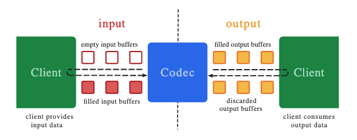
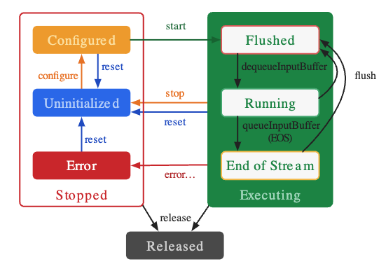

Posted Joe Chu misc6 minutes read (About 836 words)0 visits
Android MediaCodec
MediaCodec basics and how to decode a video with it.
1. Introduction
MediaCodec is a low-level API in Android used for encoding and decoding audio and video data. It provides access to hardware-accelerated codecs, allowing developers to process multimedia content efficiently. MediaCodec is a part of the Android framework and can be used for tasks like playing, recording, or streaming media.
Key Features:
Hardware Acceleration: Utilizes the device’s hardware for efficient media processing.
Flexibility: Supports a wide range of media formats and configurations.
Asynchronous Processing: Allows non-blocking operations with callbacks or a synchronous mode.

Client(left) requests an empty input buffer from codec, fill it up wtih data and send it back to codec for processing.
Codec uses the data and transform it into an output buffer.
Client(right) receives a filled output buffer, consume its contents and release it back to the codec.

MediaCodec exists in one of three states: stopped, executing and released.
Stopped When a MediaCodec is created, it is in Uninitialized state. After we configure it via configure(...), it goes into Configured state. Then we can call start() to move it to the Executing state.
Executing The Executing state has three sub-states: Flushed, Running and End-of-Stream. Immediately after start() the codec is in the Flushed sub-state, where it holds all the buffers. As soon as the first input buffer is dequeued, the codec moves to the Running sub-state, where it spends most of its life. When you queue an input buffer with the end-of-stream marker, the codec transitions to the End-of-Stream sub-state. In this state the codec no longer accepts further input buffers, but still generates output buffers until the end-of-stream is reached on the output.
Released When you are done using a codec, you must release it by calling release().
2. Synchronous Mode
MediaCodec can operate in both synchronous and asynchronous modes. For synchronous mode(blocking mode), each operation blocks the thread until the operation completes or a timeout occurs.
According to the Android official documentation, since Build.VERSION_CODES.LOLLIPOP, the preferred method is to process data asynchronously by setting a callback before calling configure. Input/output buffers are handled in callback methods.